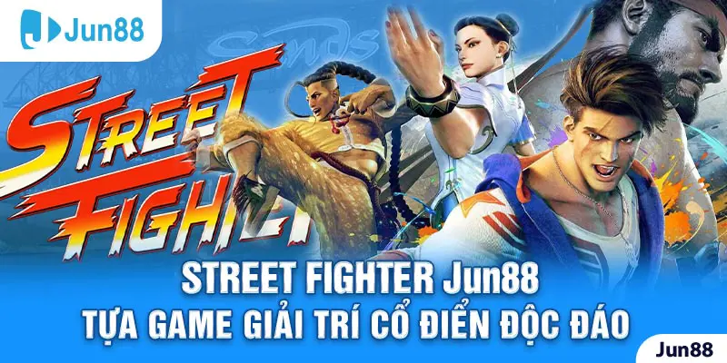
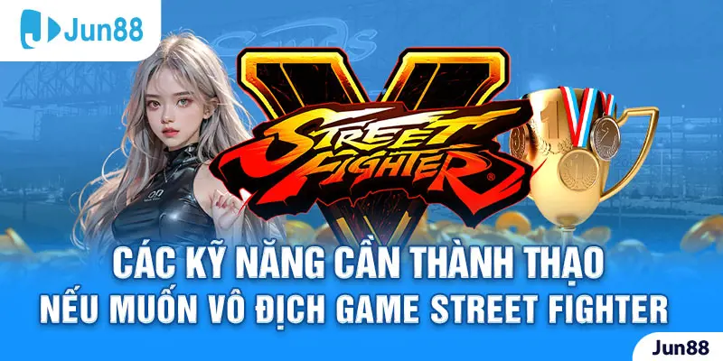
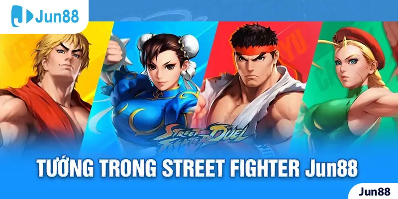

Street Fighter Jun88 chính là một tựa game đối kháng 2D vô cùng lôi cuốn. Đây được xem là tượng đài trò chơi giải trí của thế hệ 8X. Đến hiện tại, game có nhiều phiên bản độc đáo khác nhau những vẫn tạo được dấu ấn mạnh mẽ trong cộng đồng game thủ. Hãy cùng Jun88 tìm hiểu chi tiết về game giải trí thú vị này trong bài viết dưới đây.

Street Fighter Jun88 - Tựa game giải trí cổ điển độc đáo
Giới thiệu về game Street Fighter Jun88
Ngay từ khi mới ra mắt vào năm 1987, Street Fighter đã trở thành trò chơi đối kháng có sức ảnh hưởng lớn trên toàn cầu. Người chơi bị cuốn hút bởi những trận đối đầu trực diện, tay đôi giữa các đấu sĩ. Các thế đòn được mô phỏng chân thực từ bộ môn võ thuật ngoài đời thật. Bên cạnh đó, các nút tính năng hỗ trợ càng khiến diễn biến màn so tài trở nên kịch tính hơn bao giờ hết.
Trải qua hàng chục năm phát triển, tựa game đã cho ra đời rất nhiều phiên bản khác nhau. Mỗi lần nâng cấp nội dung và hình ảnh lại được đầu tư mạnh mẽ hơn. Hiện tại, bản cập nhật cuối cùng dừng lại năm 2011. Tuy nhiên, không vì thế mà trò chơi mất đi vị thế trên đấu trường game.
Để anh em có thể theo dõi các trận đấu gay cấn một cách dễ dàng hơn, Jun88 đã cho ra mắt hình thức cá cược Street Fighter Jun88 vô cùng độc đáo. Người chơi được chứng kiến tận mắt những màn tỉ thí võ thuật đẳng cấp và dự đoán đặt tiền vào bên chiến thắng. Như vậy, anh em được thỏa mãn về nhu cầu giải trí và vật chất.
Các kỹ năng cần thành thạo nếu muốn vô địch game Street Fighter
Street Fighter Jun88 chính là một trò chơi rất khó để chinh phục. Nếu bet thủ có cơ hội được trải nghiệm thì hãy trang bị một số kỹ năng dưới đây để trở thành đấu sĩ bất bại:

Các kỹ năng cần thành thạo nếu muốn vô địch game Street Fighter
Học cách phòng thủ xuất thần
Từ xưa tới nay các game đối kháng thường rất đề cao kỹ năng phòng thủ và tăng sát thương tối đa lên đối thủ. Street Fighter Jun88 cũng nằm trong số đó, chính vì thế anh em phải cẩn thận khi chơi. Một lần phòng thủ đỉnh cao cũng có thể giúp bạn tận dụng các điểm sơ hở để bật lại những đòn độc vào đối phương và hạ gục chỉ trong giây lát. Nhờ thế mà game thủ mất rất ít máu mà hiệu quả lại vô cùng tốt.
Luyện tập nhuần nhuyễn pha anti - air
Trong một trận Street Fighter Jun88, có nhiều cách để áp đảo đối phương. Ví dụ anh em có thể thực hiện cú nhảy từ trên cao để gây áp lực hoặc từ từ tiến lại gần. Đa số game thủ lão luyện đều thực hiện những cú bật nhảy tấn công từ trên không trung để mang lại kết quả tốt nhất. Nhưng khuyết điểm của chiêu này là khi trên không sẽ bị hạn chế tung đòn, không có điểm tựa nên rất dễ nhận sát thương.
Học tập chiêu vật bất bại

Tướng trong Street Fighter Jun88
Kỹ năng vật được đánh giá cao khi chơi Street Fighter Jun88 vì đây là chiêu cần căn thời gian chuẩn xác để counter. Chỉ cần một đòn có thể dễ dàng giúp bạn chiếm thế thượng phong và lượng máu ổn định không bị hụt khi thi triển chiến thuật. Bên cạnh đó, chiêu thức này còn hỗ trợ anh em phản kháng thành công các đòn của đối phương và giành chiến thắng.
Thuộc lòng các kỹ năng thành thục của nhân vật
Mỗi vị tướng trong Street Fighter Jun88 đều mang trong mình những chiêu thức đặc biệt khác nhau. Vậy nên, game thủ phải hiểu rõ đề vận dụng hiệu quả trong các pha đối đầu căng thẳng. Anh em có thể lần lượt cầm các nhân vật để thi đấu, xác định xem tướng nào có hệ thống kỹ năng phù hợp với bạn nhất để đưa ra chuỗi đòn hợp lý.
Nhờ sự tìm hiểu, bạn hiểu được điểm mạnh và điểm yếu của đối thủ. Nhưng vì thư viện tướng giống nhau, nên đối thủ cũng bắt bài được chiêu thức thành thạo của bạn. Do đó, hãy luyện tập để tạo ra những đòn đánh độc đáo.
Hướng dẫn tham gia cá cược Street Fighter Jun88
Street Fighter được đưa vào hệ thống cá cược Esport của sân chơi Jun88. Nơi đây là cầu nối vững chắc để người chơi tiếp cận với tựa game đẳng cấp mọi thời đại này một cách dễ dàng. Vậy bạn hãy thực hiện các thao tác dưới đây để giải trí nhận thưởng ngay.
Hướng dẫn tham gia cá cược Street Fighter Jun88
- Bước 1: Bạn cần phải mở trình duyệt và tìm đường link dẫn về trang chủ của nhà cái Jun88.
- Bước 2: Nếu như chưa có tài khoản, đang ở trang web với tư cách khách thì bạn hãy thực hiện đăng ký bằng cách nhấp vào “Đăng ký ngay”. Còn đã là thành viên của nền tảng thì anh em chỉ cần đăng nhập.
- Bước 3: Sau đó, hãy tiến hành nạp tiền để tạo vốn đặt cược trò chơi.
- Bước 4: Về màn hình chính và chọn vào mục “Esport” rồi bấm tìm “Street Fighter Jun88”.
- Bước 5: Cuối cùng, bạn sẽ thấy được các trận đấu sắp diễn ra, đặt tiền cược và theo dõi diễn biến trận đấu để xem ai là người chiến thắng cuối cùng.
Qua các chia sẻ trên, bạn đã hiểu về tựa game Street Fighter Jun88 và cách chinh phục trò chơi. Anh em hoàn toàn có thể tham gia cá cược để nhận về các gói thưởng hấp dẫn. Vậy nên, hãy nhanh tay nhấc máy và thực hiện theo hướng dẫn được chia sẻ bởi Jun88 để được trải nghiệm không gian giải trí đẳng cấp.
>>> Xem thêm: Jun88 - Call Of Duty Mobile | Game Bắn Súng Mobile Đỉnh Cao